문무대왕함 집단 감염 사태를 계기로 본 해상 보급의 짧은 역사 (3)
게시: 2021-08-12T06:30:23+09:00
이렇게 석탄이 아니라 석유를 연료로 하는 Queen Elizabeth급 전함들 덕분에 해상 연료 보급, 그러니까 해상 급유가 한발짝 더 가까와졌습니다. 이제는 거추장스러운 석탄통이 아니라 액체로 된 석유를 긴 호스를 이용하여 주고 받을 수 있게 되었으니까요. 사실 이런 해상 급유는 영국 전함에 중유 보일러가 채택되기 전에 먼저 시도되었습니다. 기존 석탄 전함들도 석탄의 효율적 연소를 위해 석탄에 중유를 끼얹는 것이 표준이었기 때문에, 보통 석탄 3천톤을 싣는 전함은 중유 1천톤도 함께 실었기 때문입니다. 그래서 이미 1906년 영국 해군은 전함 빅토리어스(HMS Victorious)와 유조선 페트롤레움(Petroleum) 사이에 굵은 강철 케이블을 연결하고 거기에 호스를 매달아 급유를 하는 실험을 해보았습니다. 이때는 안전 문제 때문에 석유 대신 물을 호스로 전송해보았는데, 결과는 12노트 속력으로 달리면서도 시간당 115톤의 물을 옮길 수 있었습니다. 처음 하는 작업이다보니 유조선에서 전함으로 케이블을 연결하고 호스를 전달하는데까지 식사 시간 1시간 포함해서 무려 5시간이나 걸렸고, 급수를 끝낸 뒤 호스를 다시 유조선에 돌려주는데도 3시간이 걸렸다는 문제는 있었으나, 이 정도면 성공이었습니다. 이 성공에 고무된 영국 해군은 1911년에 해상 급유를 목적으로 버마(Burma) 호라는 전문 유조선을 따로 건조하여 구축함들을 대상으로 해상 급유를 실시해 보았습니다. 버마는 성공적으로 3척의 달리는 구축함에게 각각 100~270톤 정도의 연료를 성공적으로 공급할 수 있었습니다. 그럼에도 불구하고 이 테스트 결과에 대해 국내 함대(Home Fleet) 사령관은 '구축함에 대한 해상 급유는 도움이 될 것 같지 않고 추가적인 테스트가 필요하지도 않다' 라고 결론을 냈고, 영국 해군은 제2차 세계대전 때까지도 해상 급유는 다시 시도하지 않았습니다. 역시 가장 큰 이유는 '영국에서 아프리카, 지중해, 수에즈를 돌아 인도와 싱가폴에 이르는 광범위한 기지를 가진 우리가 이런 개고생을 하면서까지 굳이 왜...' 라는 것이었겠지요.
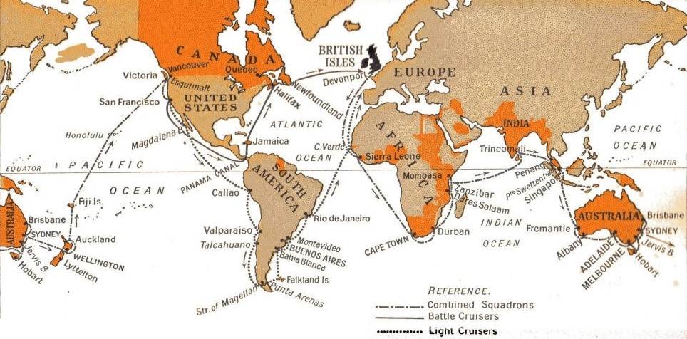
(WW1에서 국력을 말아먹고 쇠퇴하던 대영제국이 전세계에게 영국 아직 죽지 않았다는 것을 보여주기 위해 1923~24년 Empire Cruise라는 이름으로 자국 식민지를 중심으로 전세계 일주를 수행했습니다. 여기에는 당시 최신예이자 최대, 최정예 고속전함이던 HMS Hood를 비롯한 battlecruiser들과 cruiser들이 동원되었는데, 구축함은 없이 이렇게 순양함급만 데리고 간 이유도 아직 당시에는 해상 연료 보급이 영국 해군에서는 불가능했기 때문이었습니다. 다만 정박 상태에서의 연료 공급을 위해 유조선을 동원하기는 했습니다. 기록을 보면 당시 영국 해군성과 재무성이 없는 살림에 감당하기 어려웠던 이 Empire Cruise 비용을 산정하느라 주판알 굴리며 머리를 쥐어싸던 흔적을 엿볼 수 있습니다.)
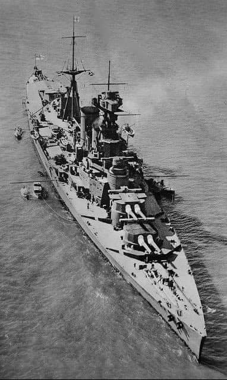 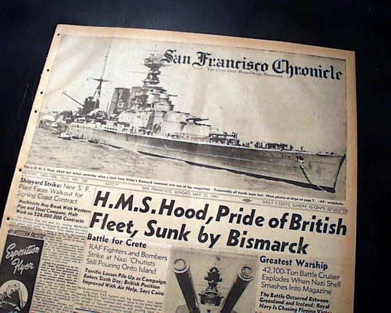
(그런데 정작 WW2가 벌어지자 얕잡아보던 독일 Bismarck에게 로열네이비의 자랑이자 Empire Cruise에서 영국의 위상을 높여주었던 The Mighty Hood가 어이없이 격침당하지요. 요즘 영국 해군이 없는 살림 쥐어짜서 HMS Queen Elizabeth를 선두로 한 항모타격전단을 남중국해에 파견하는 모습이... 어디서 봤던 그림 같아서 좀 애잔하고 불안합니다.) 그러나 필요는 발명의 어머니라고, 배부른 영국 해군과는 달리 드넓은 태평양에 달랑 하와이와 필리핀 밖에 가진 것이 없던 미해군은 해상 급유가 꼭 필요했습니다. 1917년, 제1차 세계대전에 참전하게 된 미해군은 대서양을 건너 영국으로 향한 구축함들에게 평행으로 달리는 유조선 모미(USS Maumee (AO-2)) 호로부터 직경 10cm짜리 고무 고스를 통한 해상 급유를 실시했습니다. 이때 모미 호의 현측 해상 급유 시스템을 설계하고 설치한 사람은 당시 31세의 젊은 기관장인 대위였는데, 이름이 니미츠(Chester Nimitz)였습니다. 이때 미해군은 모미 호에서 해상 급유 기술을 사실상 완성합니다. 그린랜드 남단에 배치된 모미 호는 3개월간 총 34척의 구축함에게 해상 급유를 실시했는데, 이때 모미 호와 구조선은 옆으로 나란히 행해하면서 급유를 실시했고 이때 두 선박의 간격은 불과 12m에 불과했다고 합니다. 이때 완성된 해상 급유 방식은 당시엔 그렇게까지 큰 의미를 갖지 않았습니다만, 훗날 제2차 세계대전에서 미국이 태평양의 제해권을 확립하는데 큰 역할을 합니다. 물론 이 시스템을 고안한 니미츠도 정말 큰 역할을 합니다. 미드웨이 전투를 지휘한 니미츠 제독이 바로 이 사람이었거든요.
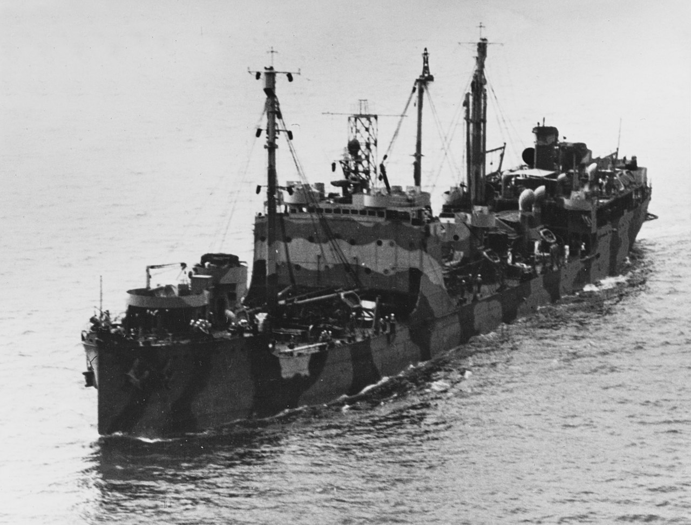
(1만4천톤급 미해군 유조선 모미(Maumee) 호입니다. 모미 호는 미해군에서 최초로 디젤 엔진을 장착한 선박이기도 했습니다. 제2차 세계대전에서도 대서양을 오가며 미해군 함대에게 소중한 연료를 공급했고 전쟁 말기에 태평양에 배치되었으며, 1946년 중국 국민당군에게 공여되었습니다. 결국 1960년대에 대만에서 퇴역했습니다.) 이때 미해군이 완성한 기술은 곧 다른 나라 해군에게도 알려져 각국은 해상 급유 훈련을 실시했습니다. 그러나 미해군만큼 필요가 절실하지가 않아서 그랬는지, 혹은 포술 훈련이나 기동 훈련에 비해 그다지 폼나는 훈련이 아니라고 생각해서 그랬는지 해상 급유 기술은 기타 국가에서는 그다지 발전하지 못했고 잠수함이나 구축함 등의 작은 선박에 대해서만 조금 이루어졌습니다. 다만 미해군은 1939~40년 당시 해군 소장이 된 니미츠에 의해 좀더 완벽하게 다듬어져 전함이나 항공모함에 대한 해상 급유도 가능해졌습니다. 미해군 외에 장거리 작전을 위해 해상 급유에 관심을 기울인 것은 바로 일본 해군이었습니다. 일본 해군은 고속 유조선 선단을 갖추는 것에 집중한 덕분에 1941년 태평양 전쟁이 시작될 무렵, 일본은 전세계 해군 중에서 가장 빠른 유조선단을 갖추게 되었습니다. 다만 일본 해군의 해상 급유 솜씨는 미해군에 비해 다소 비효율적이었습니다. 일본 해군은 전통적인 방식인 유조선의 선미로부터 군함의 선수를 통한 급유를 택했는데, 이는 안전 문제 때문에 필연적으로 두 선박 사이의 간격이 훨씬 길어야 했고 선박의 항해 속도도 5노트 정도로 느리게 유지해야 했습니다. 게다가 파도도 매우 잔잔한 상태에서만 가능했습니다.
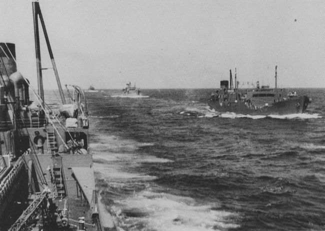
(당시 일본 해군이 보유한 카와사키급 유조선들입니다. 이들의 속력은 20노트였는데, 이는 비슷한 시기에 진수된 미국 유조선들의 속도인 18노트를 상회하는 속도였습니다. 그러나 역시 전쟁이 길어지면서 대부분 미군 잠수함에 의해 격침되었고 일본 해군의 작전 능력은 크게 감소되었습니다.) 그에 비해 미해군은 유조선과 군함이 평행으로 달리면서 급유하는 방식을 택했습니다. 물론 이것도 위험했습니다만 두 선박 사이를 훨씬 더 가깝게, 또 항행 속도도 더 빠르게 유지할 수 있었고, 양현을 통해 2척에게 한꺼번에 급유도 가능했습니다. 그 뿐만 아니라 두 선박 사이의 간격이 짧다는 것 때문에 훨씬 중요한 점이 있었습니다. 두 선박 사이의 케이블을 통해서 식량과 탄약 등도 전달할 수 있었던 것입니다. 그래서 미해군에서는 그냥 refueling at sea라고 하지 않고 underway replenishment (UnRep)이라고 부르는데, 연료 뿐만 아니라 다른 보급품도 함께 전달받기 때문입니다. 일본 해군처럼 앞뒤로 늘어선 두 선박 사이에 케이블이 길게 늘어지면 필연적으로 케이블과 호스가 바닷물에 잠길 수 밖에 없으므로 그것이 불가능했습니다. 덕분에 1942년 이전에는 USS Yorktown이 샌디에고 출항 이후 105일간 해상 작전을 펼친 것이 최장 기간이었고 식량 사정이 절박해져 100일째 되던 날엔 항모 전체에 스테이크가 딱 4인분 남아있었다고 합니다. 그러나 WW2 기간 중 미해군에서는 매달 underway replenishment를 통해 식량을 보급받아서 수병들의 사기를 진작시킬 수 있었습니다.
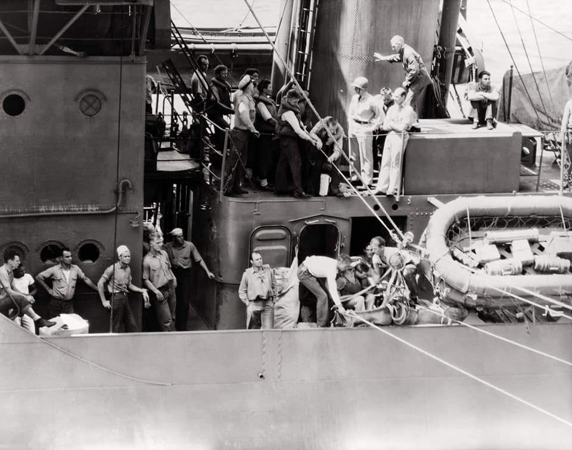
(1942년 5월 31일 구축함 USS Monaghan이 USS Enterprise (CV-6)에게 이함 중 사고로 바다에 추락한 뇌격기 TBD Devastator의 조종사와 후방 기총수를 돌려주는 장면입니다. 이때도 해상 급유에 사용되는 기법이 사용되었습니다. 보통 이렇게 구축함이 조종사를 항모에 인계해줄 때는 항모는 연결된 케이블을 통해서 답례로 아이스크림통을 매달아 보내주는 것이 관례였습니다. 작은 구축함에는 아이스크림 제조기가 없었기 때문이었습니다. 불행히도 며칠 후 벌어진 Midway 해전에서 저 조종사와 기총수는 모두 전사했습니다.)
원래 아마추어들이 전술이 어떻고 전략이 어떻고 떠들때 프로는 조용히 보급 계획을 논의한다고 하지요. 미해군이 딱 그랬습니다. 태평양 전쟁이 시작되던 초기, 일본 해군이 압도적 우위를 가졌던 것은 진주만 습격의 성과 때문이기도 했습니다만 주요 전장이 일본에서 가깝기 때문이었습니다. 미해군은 본토는 물론 하와이에서 멀리 떨어진 필리핀과 동남아, 파푸아뉴기니 일대에서 싸우기 위해 보급선이 엄청나게 늘어져야 했습니다. 그러나 미해군은 초기의 불리함을 극복하고 결국 일본 함대를 격멸시켰는데, 이는 필리핀 동쪽 캐롤라인 제도의 울리티(Ulithi) 환초에 건설한 미해군 기지 덕분이기도 했습니다만 underway replenishment를 통해 미해군 함대가 장기간 작전이 가능하지 않았다면 결코 이룰 수 없는 위업이었습니다.
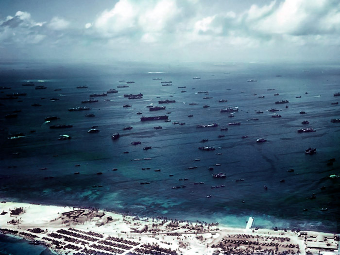
(1944년 울리티(Ulithi) 환초의 미해군 기지 모습입니다. 이 기지는 역사상 최대의 해군 기지로서, 1945년 3월 여기는 항모 29척, 전함 15척, 순양함 23척, 그리고 106척의 구축함으로 이루어진 함대의 모항이었습니다. 여기를 기지로 삼은 것은 공략할 동남아 일본군 기지와의 상대적 위치, 그리고 거친 파도로부터 함대를 보호해줄 환초의 특성 때문이었는데, 여기서 일한 각종 기술자만도 6천명 수준이었고 당시 여기서는 모든 부품과 모든 합금을 제조해냈고 거대한 전함도 부유식 드라이독에 넣어서 수리가 가능했습니다. 당시 이곳 원주민 수는 400여명으로서 지금도 1천명을 넘지 않는 곳인데, 이렇게 많은 인원이 온갖 공장을 돌리려면 당연히 물이 부족했습니다. 미해군은 이를 해결하기 위해 USS Abatan(2만톤) 등의 증류선을 동원, 바닷물을 증류하여 식수로 만들었습니다.) 미해군이나 일본 해군 외에, 독일도 U-boat 함대가 넓은 대서양을 휘젓고 다녔으므로 해상 급유가 필요했습니다. 그래서 독일도 '젖소'(milk cow 또는 Milchkuh)라는 이름의 2천톤급 대형 잠수함을 건조하여 다른 유보트들에게 해상 급유 및 탄약 식량 등을 공급했습니다. 그러나 이들은 항행하면서 급유를 할 수도 없었고 잠수함 특성상 오래 떠있을 경우 탐지되어 격침되는 경우가 많았습니다.
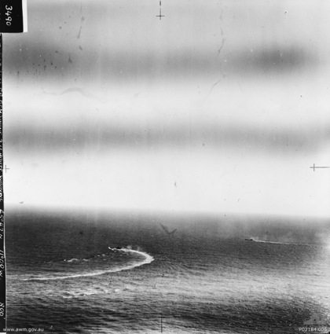
(1943년 프랑스 서쪽 비스케이(Biscay) 만에서 연합군 항공기의 공격에서 달아나기 위해 애쓰는 '젖소' 잠수함 U-461과 U-462입니다. 불행히 달아나지 못하고 둘다 격침되었습니다.) 해상 급유는 지금도 여전히 위험한 작업입니다. 언듯 생각하면 그냥 멈춰선 상태에서 호스를 연결하고 급유를 받는 것이 더 안전해보이지만 그렇지 않다고 합니다. 군함이 멈춰서는 것은 그 자체가 적 공격에 취약해지는 것일 뿐만 아니라, 선박은 멈춰설 경우 키가 듣지 않기 때문에 파도 등에 떠밀려 가까이 정박한 두 선박이 충돌할 위험이 더 커지기 때문입니다. 그래서 평화시에도 항상 두 선박이 15노트 정도의 속도로 달리면서 급유를 하는데, 종종 사고가 벌어집니다. 1975년, 항공모함 USS John F. Kennedy (CV-67, 8만2천톤, 34노트)가 평행으로 달리던 순양함 USS Belknap(9천톤, 34노트)와 충돌하는 사고가 벌어졌습니다. 이때 항공유 호스가 터지며 그 연료가 콸콸 쏟아지는 바람에 두 선박 모두에 화재가 발생했고, 그 화재가 벨크냅의 중간 탄약고까지 번져 벨크냅의 상부 구조물이 다 녹아내리고 많은 사상자가 나는 큰 사고가 벌어졌습니다. 이런 일을 겪고도 똑같은 함대에서 바로 다음 해에 또 거의 동일한 사고가 벌어졌습니다. USS John F. Kennedy로부터의 야간 해상 보급 훈련을 하던 구축함 USS Bordelon(3천5백톤, 36.8노트)이 케네디와 마스트가 부러질 정도로 강하게 충돌했고, 결국 보들론은 그 피해 때문에 퇴역해야 했습니다. 이런 연속적인 사고로 인해 존 F. 케네디 호는 결국 'The Can Opener' (깡통 따개)라는 달갑지 않은 별명을 얻었습니다.
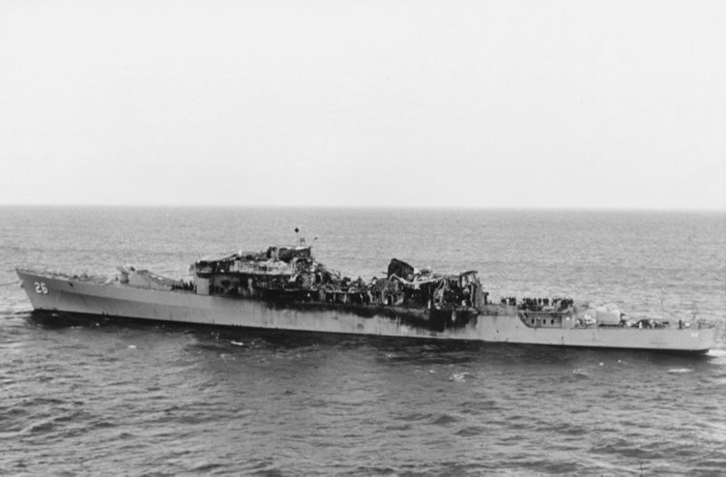
(1975년의 사고로 인해 녹아내린 순양함 USS Belknap입니다.)
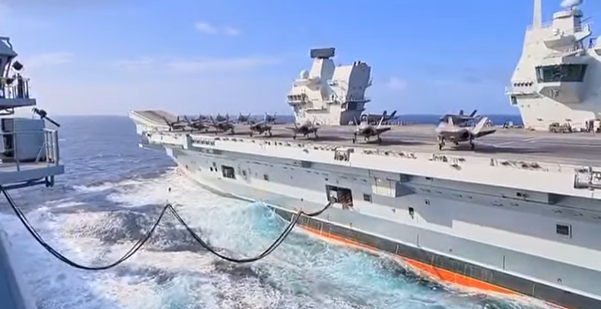
(남중국 해에 진입한 영국 항모 HMS Queen Elizabeth가 해상 급유를 받는 모습입니다. 영국 해군에서는 해상 보급을 Replenishment At Sea (RAS)라고 부릅니다.)
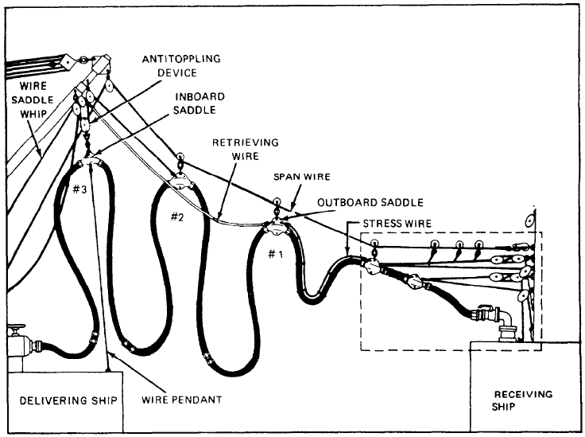
(해상 급유의 세부적 그림입니다. 그냥 이 통에서 저 통으로 옮겨 담으면 되는 것처럼 간단할 것 같지만 나름 복잡하네요.)
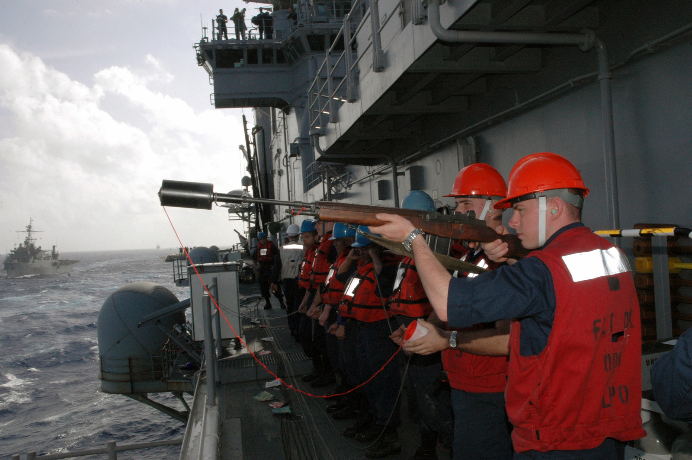
(저런 UnRep을 수행할 때, 두 선박 사이에 맨 처음에 어떻게 케이블을 연결할까요? 이렇게 M-14 총류탄을 이용해서 가느다란 밧줄을 넘기는 것부터 시작한다고 합니다.)
이렇게 미해군에서는 위험하지만 실전에서 꼭 필요한 기술인 해상 보급을 연습하기 위해 일부러라도 군함에 대한 연료 및 식량 보급을 우호국가의 항구에서 하지 않고 바다 위에서 보급선을 통해서 하는 경우가 많다고 합니다. 그러다보니 우호국가의 항구에 정박을 하더라도, 의외로 그떄 연료와 식량 등을 현지에서 보급하는 일이 그렇게 많지 않은 모양입니다. 아래 표는 미해군 항공모함이 외국 항구에 정박할 때 발생하는 비용을 항목별로 분석한 표입니다. 보시다시피 각종 시설 사용료와 함께, 주차비에 해당하는 항구 정박료가 제일 많이 들어갑니다. 그리고 승조원들이 안전하게 현지에서 휴식할 수 있도록 버스 임대비, 유선 전화 가설비, 그리고 보안을 위한 x-ray 검문 장비 등에도 돈이 꽤 많이 들어가네요. 항구에서 받는 이런 서비스 등의 상당 부분은 미해군에 의해 미리 선정된 현지 에이전시가 처리하게 되고 그 비용도 사전에 미해군측이 현지 에이전시에게 미리 송금해서 정산하게 하는데, 예상을 초과하는 비용은 나중에 사후 정산하기도 하고, 특히 식자재 등의 일부 비용은 현지에서 함장이 직접 현금으로 지불하기도 한다고 합니다. 아마 미해군도 요즘은 코로나 때문에 저렇게 외국 항구에 기항하는 일은 매우 적을 것입니다. 그래도 해상 보급을 통해 식자재 등은 부족하지 않게 받을 것입니다.
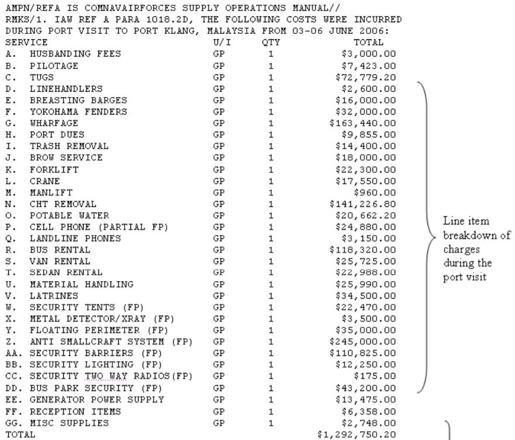 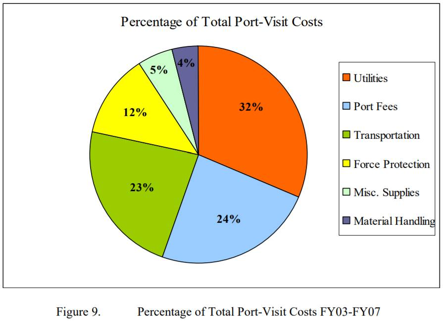
(저 비용 중 꽤 많은 금액인 CHT removal이 뭔가 찾아보니 Sewage Collection, Holding, and Transfer (CHT) 네요. 즉 정화조 처리... 뜻밖이에요. 그냥 공해상에 다 내다버리는 줄 알았는데 돈 내고 처리하고 있었군요. 가만 보면 latrine (군대 화장실) 이라는 비용이 또 따로 있어요. 이건 아마 항구에 정박했을 때 현지 계약직 근로자들을 위해 육상에 설치한 임시 화장실을 뜻하는 것일 겁니다. 군함에 민간인들이 '잠깐 화장실 쓰러' 탑승하는 것은 법률적으로나 보안상으로나 번거로운 일이거든요.)
저렇게 해상 보급을 많이 한다고 해도 병사들 휴식을 위해서라도 외국 항구에 기항은 결국 해야 하고, 또 모든 군함이 모든 보급품을 해상 보급을 통해서 받을 수도 없기 때문에 많은 미해군 함정이 외국 항구에 기항할 때 연료와 식자재를 현지에서 구매하여 공급 받습니다. 이때도 물론 미리 선정된 현지 에이전시가 도중에 끼지요. 미해군은 엄청난 구매자이자 큰 물주입니다. 따라서 항공모함 같은 거대 함정이 입항하고 그에 대한 영업을 할 수 있다면 꽤 이윤이 괜찮은 사업일 것입니다. 그러나 이윤이 있는 곳에 범죄가 있기 마련이지요.
2010년대에 일어난 소위 'Fat Leonard' 사건이 바로 그런 것입니다. 이 사건은 동남아 일대에서 미해군에게 기항지에서의 서비스를 총괄해주던 현지 에이전시가 일으킨 뇌물 스캔들입니다. 레오너드라는 말레이시아 사업가가 주범으로 지목된 이 사건에서, 어느 항구에 어떤 함정이 기항해서 얼마나 구매 계약을 할 것인지 등에 영향을 주기 위해 수십만 달러의 뇌물이 뿌려졌고, 총 22명이 유죄 판결을 받았는데 그 중에는 10명의 미해군 장교와 2명의 부사관이 포함되어 미해군 역사상 최악의 부패 사건으로 기록되었습니다.
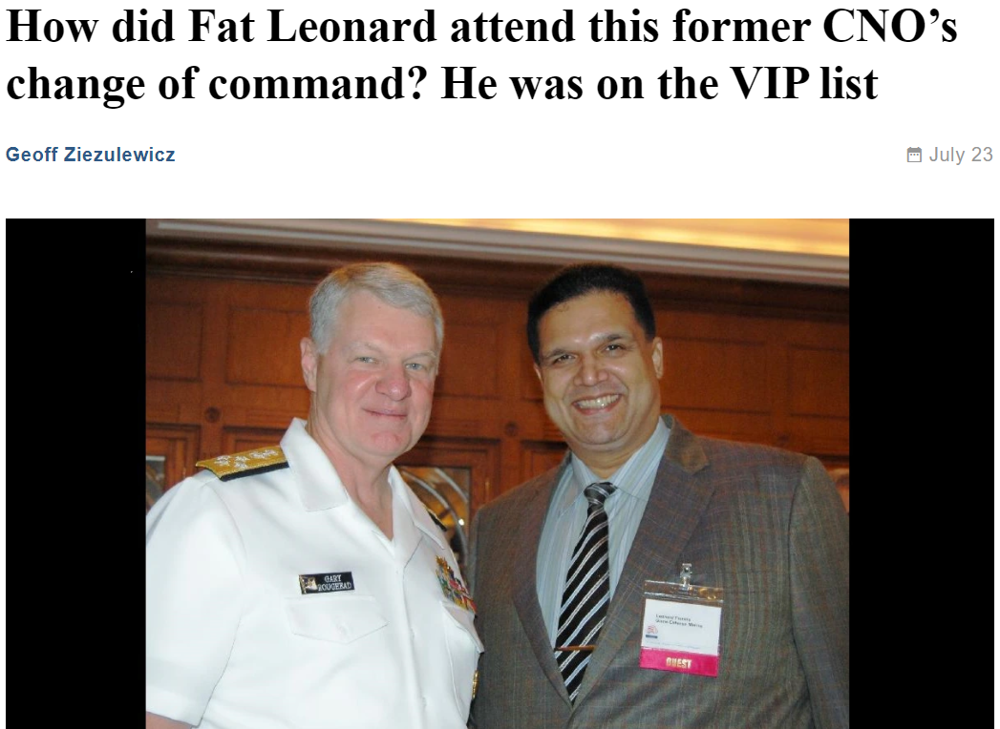
https://en.wikipedia.org/wiki/Underway_replenishment http://www.hmshood.org.uk/reference/official/adm116/adm116-2219.htm https://en.wikipedia.org/wiki/Cruise_of_the_Special_Service_Squadron https://en.wikipedia.org/wiki/Fat_Leonard_scandal https://en.wikipedia.org/wiki/HMS_Warspite_(03) https://en.wikipedia.org/wiki/Chester_Nimitz https://en.wikipedia.org/wiki/USS_Maumee_(AO-2) https://thediplomat.com/2020/01/were-tankers-the-key-to-imperial-japans-early-wartime-success/ https://en.wikipedia.org/wiki/Ulithi https://en.wikipedia.org/wiki/Kawasaki-type_oiler https://en.wikipedia.org/wiki/German_submarine_U-462 https://www.quora.com/Is-it-true-that-only-USN-and-RN-could-conduct-underway-replenishment-refueling-while-cruising-during-WW2-If-so-how-could-the-Axis-submarines-operate-in-the-Pacific-and-the-Atlantic https://en.wikipedia.org/wiki/USS_John_F._Kennedy_(CV-67)